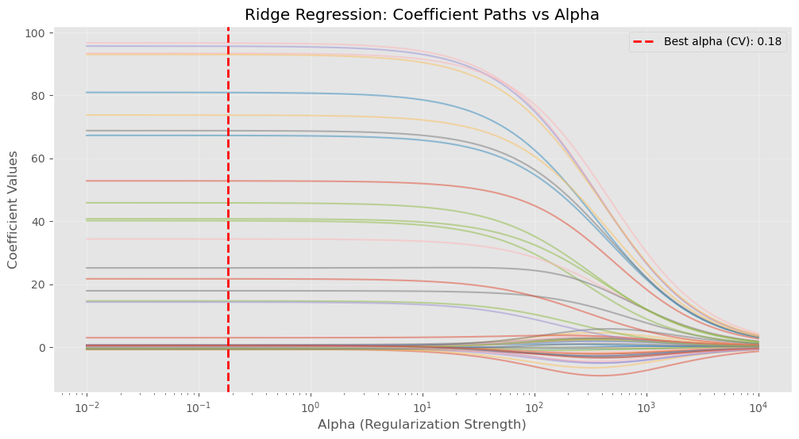
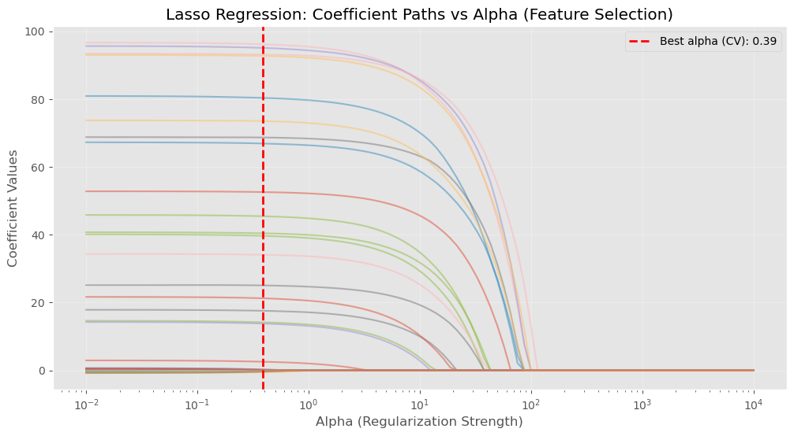
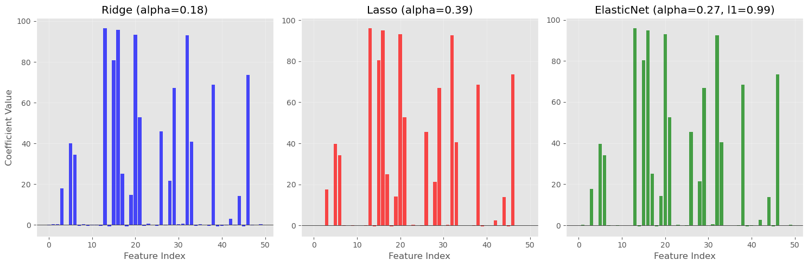

import numpy as np
import pandas as pd
import matplotlib.pyplot as plt
import seaborn as sns
from sklearn.model_selection import train_test_split, GridSearchCV, cross_val_score
from sklearn.linear_model import Ridge, Lasso, ElasticNet
from sklearn.linear_model import RidgeCV, LassoCV, ElasticNetCV
from sklearn.preprocessing import StandardScaler
from sklearn.metrics import mean_squared_error, r2_score
from sklearn.datasets import make_regression
%matplotlib inline
plt.style.use('ggplot')
from matplotlib.pylab import rcParams
rcParams['figure.figsize'] = 10, 614 Cross-Validation for Regularization: RidgeCV, LassoCV, and ElasticNetCV
14.1 Introduction: Connecting Cross-Validation to Regularization
In the Regularization chapter, we learned about Ridge, Lasso, and Elastic Net regression and how the regularization strength (alpha) controls the trade-off between bias and variance. We saw that:
- Small alpha: Less regularization → higher risk of overfitting
- Large alpha: More regularization → higher risk of underfitting
- Optimal alpha: Balances bias and variance for best generalization
We observed the impact of different alpha values but didn’t learn how to choose the optimal alpha. That’s where cross-validation comes in.
In the previous two notebooks, we learned: 1. Cross-Validation Fundamentals: Using cross_val_score to evaluate models 2. GridSearchCV: Automated hyperparameter tuning for any model
Now we’ll explore specialized tools designed specifically for tuning regularization parameters. These tools are more efficient than GridSearchCV for regularization problems.
14.1.1 Learning Objectives
By the end of this notebook, you will: 1. Understand why specialized CV tools exist for regularization 2. Use RidgeCV to efficiently tune Ridge regression 3. Use LassoCV to efficiently tune Lasso regression
4. Use ElasticNetCV to tune both alpha and l1_ratio for Elastic Net 5. Compare these specialized tools with GridSearchCV 6. Choose the right tool for different regularization scenarios
14.2 Setup and Data Preparation
14.2.1 Generate Regression Data
We’ll create a dataset with multiple features, some of which are informative and others are noise. This setup mimics real-world scenarios where regularization is beneficial.
# Generate regression dataset with noise
X, y = make_regression(
n_samples=500,
n_features=50,
n_informative=20, # Only 20 out of 50 features are useful
n_targets=1,
noise=10,
random_state=42
)
# Split into train and test sets
X_train, X_test, y_train, y_test = train_test_split(
X, y, test_size=0.2, random_state=42
)
# Standardize features (important for regularization!)
scaler = StandardScaler()
X_train_scaled = scaler.fit_transform(X_train)
X_test_scaled = scaler.transform(X_test)
print(f"Training samples: {X_train.shape[0]}")
print(f"Test samples: {X_test.shape[0]}")
print(f"Number of features: {X_train.shape[1]}")
print(f"Number of informative features: 20")Training samples: 400
Test samples: 100
Number of features: 50
Number of informative features: 2014.3 Baseline: Using GridSearchCV for Ridge Regression
Before introducing the specialized tools, let’s see how we would tune Ridge regression using GridSearchCV from the previous notebook.
# Define alpha values to test
alphas = np.logspace(-4, 4, 50) # 50 values from 0.0001 to 10000
# Use GridSearchCV to find best alpha
ridge_grid = GridSearchCV(
Ridge(),
param_grid={'alpha': alphas},
cv=5,
scoring='r2',
return_train_score=True
)
# Fit and time the operation
import time
start_time = time.time()
ridge_grid.fit(X_train_scaled, y_train)
grid_time = time.time() - start_time
print(f"GridSearchCV completed in {grid_time:.3f} seconds")
print(f"Best alpha: {ridge_grid.best_params_['alpha']:.4f}")
print(f"Best CV score (R²): {ridge_grid.best_score_:.4f}")
print(f"Test score (R²): {ridge_grid.score(X_test_scaled, y_test):.4f}")GridSearchCV completed in 0.500 seconds
Best alpha: 0.1842
Best CV score (R²): 0.9983
Test score (R²): 0.9984GridSearchCV works, but it’s not optimized for regularization. Let’s see how the specialized tools compare.
14.4 RidgeCV: Efficient Cross-Validation for Ridge Regression
RidgeCV is a specialized version of Ridge regression that efficiently performs cross-validation to select the best alpha value.
14.4.1 Why RidgeCV is More Efficient
Ridge regression has a special mathematical property: the solution can be computed very efficiently for multiple alpha values simultaneously using a technique called generalized cross-validation (GCV) or by exploiting the fact that the solutions share computations.
14.4.2 Key Features of RidgeCV
✅ Built-in CV: No need to wrap in GridSearchCV
✅ Efficient computation: Uses optimized algorithms for Ridge
✅ Multiple alphas: Tests many alpha values quickly
✅ Automatic selection: Returns the best alpha
✅ Single interface: Works like regular Ridge after fitting
14.4.3 Using RidgeCV
# Initialize RidgeCV with the same alphas
ridge_cv = RidgeCV(alphas=alphas, cv=5, scoring='r2')
# Fit and time the operation
start_time = time.time()
ridge_cv.fit(X_train_scaled, y_train)
ridgecv_time = time.time() - start_time
print(f"RidgeCV completed in {ridgecv_time:.3f} seconds")
print(f"Best alpha: {ridge_cv.alpha_:.4f}")
# Make predictions
y_train_pred = ridge_cv.predict(X_train_scaled)
y_test_pred = ridge_cv.predict(X_test_scaled)
# Evaluate
train_r2 = r2_score(y_train, y_train_pred)
test_r2 = r2_score(y_test, y_test_pred)
test_mse = mean_squared_error(y_test, y_test_pred)
print(f"Train R²: {train_r2:.4f}")
print(f"Test R²: {test_r2:.4f}")
print(f"Test MSE: {test_mse:.4f}")
print(f"\nSpeedup: {grid_time/ridgecv_time:.2f}x faster than GridSearchCV")RidgeCV completed in 0.334 seconds
Best alpha: 0.1842
Train R²: 0.9989
Test R²: 0.9984
Test MSE: 112.6065
Speedup: 1.50x faster than GridSearchCV14.4.4 Visualizing Ridge Coefficient Paths
One advantage of RidgeCV is that we can easily visualize how coefficients change with different alpha values.
# Fit Ridge for multiple alphas to see coefficient paths
alphas_plot = np.logspace(-2, 4, 100)
coefs = []
for alpha in alphas_plot:
ridge = Ridge(alpha=alpha)
ridge.fit(X_train_scaled, y_train)
coefs.append(ridge.coef_)
# Plot coefficient paths
plt.figure(figsize=(12, 6))
plt.plot(alphas_plot, coefs, alpha=0.5)
plt.axvline(ridge_cv.alpha_, color='red', linestyle='--', linewidth=2,
label=f'Best alpha (CV): {ridge_cv.alpha_:.2f}')
plt.xscale('log')
plt.xlabel('Alpha (Regularization Strength)')
plt.ylabel('Coefficient Values')
plt.title('Ridge Regression: Coefficient Paths vs Alpha')
plt.legend()
plt.grid(True, alpha=0.3)
plt.show()
print("Notice how coefficients shrink toward zero as alpha increases.")
print("The red line shows the optimal alpha chosen by RidgeCV.")
Notice how coefficients shrink toward zero as alpha increases.
The red line shows the optimal alpha chosen by RidgeCV.14.5 LassoCV: Efficient Cross-Validation for Lasso Regression
LassoCV is the cross-validation version of Lasso regression. Unlike Ridge, Lasso can set coefficients exactly to zero, performing feature selection.
14.5.1 Why LassoCV is Important
Lasso uses an iterative algorithm (coordinate descent), which is slower than Ridge’s closed-form solution. LassoCV uses warm starts (reusing previous solutions) to efficiently test multiple alpha values.
14.5.2 Key Features of LassoCV
✅ Built-in CV: Integrated cross-validation
✅ Warm starts: Efficient computation across alphas
✅ Feature selection: Identifies which features to keep
✅ Path computation: Can compute full regularization path
✅ Convergence control: Adjustable max_iter and tol
14.5.3 Using LassoCV
# Initialize LassoCV
# Note: Lasso requires careful tuning of max_iter and tol
lasso_cv = LassoCV(
alphas=alphas,
cv=5,
max_iter=10000, # Increase if convergence warnings appear
tol=0.0001, # Convergence tolerance
random_state=42
)
# Fit and time the operation
start_time = time.time()
lasso_cv.fit(X_train_scaled, y_train)
lassocv_time = time.time() - start_time
print(f"LassoCV completed in {lassocv_time:.3f} seconds")
print(f"Best alpha: {lasso_cv.alpha_:.4f}")
# Make predictions
y_train_pred = lasso_cv.predict(X_train_scaled)
y_test_pred = lasso_cv.predict(X_test_scaled)
# Evaluate
train_r2 = r2_score(y_train, y_train_pred)
test_r2 = r2_score(y_test, y_test_pred)
test_mse = mean_squared_error(y_test, y_test_pred)
print(f"Train R²: {train_r2:.4f}")
print(f"Test R²: {test_r2:.4f}")
print(f"Test MSE: {test_mse:.4f}")
# Feature selection: count non-zero coefficients
n_nonzero = np.sum(lasso_cv.coef_ != 0)
print(f"\nFeatures selected: {n_nonzero}/{X_train.shape[1]}")
print(f"Features eliminated: {X_train.shape[1] - n_nonzero}")LassoCV completed in 0.039 seconds
Best alpha: 0.3907
Train R²: 0.9988
Test R²: 0.9984
Test MSE: 117.9942
Features selected: 32/50
Features eliminated: 1814.5.4 Visualizing Lasso Coefficient Paths and Feature Selection
# Fit Lasso for multiple alphas to see coefficient paths
coefs_lasso = []
for alpha in alphas_plot:
lasso = Lasso(alpha=alpha, max_iter=10000)
lasso.fit(X_train_scaled, y_train)
coefs_lasso.append(lasso.coef_)
# Plot coefficient paths
plt.figure(figsize=(12, 6))
plt.plot(alphas_plot, coefs_lasso, alpha=0.5)
plt.axvline(lasso_cv.alpha_, color='red', linestyle='--', linewidth=2,
label=f'Best alpha (CV): {lasso_cv.alpha_:.2f}')
plt.xscale('log')
plt.xlabel('Alpha (Regularization Strength)')
plt.ylabel('Coefficient Values')
plt.title('Lasso Regression: Coefficient Paths vs Alpha (Feature Selection)')
plt.legend()
plt.grid(True, alpha=0.3)
plt.show()
print("Notice how Lasso coefficients become EXACTLY zero (feature selection).")
print("Ridge only shrinks coefficients toward zero but never eliminates them.")
Notice how Lasso coefficients become EXACTLY zero (feature selection).
Ridge only shrinks coefficients toward zero but never eliminates them.14.5.5 Comparing Selected Features
# Compare Ridge vs Lasso coefficients
comparison_df = pd.DataFrame({
'Feature': range(X_train.shape[1]),
'Ridge_Coef': ridge_cv.coef_,
'Lasso_Coef': lasso_cv.coef_,
'Lasso_Selected': lasso_cv.coef_ != 0
})
print("Top 10 features by absolute coefficient value (Lasso):")
print(comparison_df.reindex(comparison_df['Lasso_Coef'].abs().sort_values(ascending=False).index).head(10))
print(f"\nFeatures with non-zero Lasso coefficients: {n_nonzero}")
print(f"Features with non-zero Ridge coefficients: {np.sum(ridge_cv.coef_ != 0)}")Top 10 features by absolute coefficient value (Lasso):
Feature Ridge_Coef Lasso_Coef Lasso_Selected
13 13 96.628353 96.152710 True
16 16 95.611601 95.091756 True
20 20 93.373557 93.153483 True
32 32 92.953043 92.717516 True
15 15 80.890047 80.353362 True
46 46 73.712757 73.509064 True
38 38 68.764065 68.683803 True
29 29 67.242161 66.896368 True
21 21 52.801614 52.583087 True
26 26 45.819338 45.460478 True
Features with non-zero Lasso coefficients: 32
Features with non-zero Ridge coefficients: 5014.6 ElasticNetCV: Combining L1 and L2 Regularization
ElasticNetCV combines Ridge (L2) and Lasso (L1) regularization, controlled by two parameters: - alpha: Overall regularization strength - l1_ratio: Balance between L1 and L2 (0 = pure Ridge, 1 = pure Lasso)
14.6.1 Why Use Elastic Net?
✅ Best of both worlds: Feature selection (L1) + stability (L2)
✅ Handles multicollinearity: Better than Lasso when features are correlated
✅ Grouped selection: Tends to select/eliminate correlated features together
✅ More stable: Less sensitive to feature correlations than Lasso
14.6.2 Using ElasticNetCV
# Initialize ElasticNetCV
# It will tune both alpha and l1_ratio
elasticnet_cv = ElasticNetCV(
alphas=alphas,
l1_ratio=[0.1, 0.3, 0.5, 0.7, 0.9, 0.95, 0.99], # Test different L1/L2 mixes
cv=5,
max_iter=10000,
tol=0.0001,
random_state=42
)
# Fit and time the operation
start_time = time.time()
elasticnet_cv.fit(X_train_scaled, y_train)
elasticnetcv_time = time.time() - start_time
print(f"ElasticNetCV completed in {elasticnetcv_time:.3f} seconds")
print(f"Best alpha: {elasticnet_cv.alpha_:.4f}")
print(f"Best l1_ratio: {elasticnet_cv.l1_ratio_:.4f}")
print(f" (0 = pure Ridge, 1 = pure Lasso)")
# Make predictions
y_train_pred = elasticnet_cv.predict(X_train_scaled)
y_test_pred = elasticnet_cv.predict(X_test_scaled)
# Evaluate
train_r2 = r2_score(y_train, y_train_pred)
test_r2 = r2_score(y_test, y_test_pred)
test_mse = mean_squared_error(y_test, y_test_pred)
print(f"Train R²: {train_r2:.4f}")
print(f"Test R²: {test_r2:.4f}")
print(f"Test MSE: {test_mse:.4f}")
# Feature selection
n_nonzero_en = np.sum(elasticnet_cv.coef_ != 0)
print(f"\nFeatures selected: {n_nonzero_en}/{X_train.shape[1]}")
print(f"Features eliminated: {X_train.shape[1] - n_nonzero_en}")ElasticNetCV completed in 0.201 seconds
Best alpha: 0.2683
Best l1_ratio: 0.9900
(0 = pure Ridge, 1 = pure Lasso)
Train R²: 0.9989
Test R²: 0.9984
Test MSE: 118.0502
Features selected: 37/50
Features eliminated: 1314.6.3 Comparing All Three Models
# Create a comprehensive comparison
models_comparison = pd.DataFrame({
'Model': ['RidgeCV', 'LassoCV', 'ElasticNetCV'],
'Best Alpha': [ridge_cv.alpha_, lasso_cv.alpha_, elasticnet_cv.alpha_],
'L1 Ratio': [0.0, 1.0, elasticnet_cv.l1_ratio_],
'Train R²': [
r2_score(y_train, ridge_cv.predict(X_train_scaled)),
r2_score(y_train, lasso_cv.predict(X_train_scaled)),
r2_score(y_train, elasticnet_cv.predict(X_train_scaled))
],
'Test R²': [
r2_score(y_test, ridge_cv.predict(X_test_scaled)),
r2_score(y_test, lasso_cv.predict(X_test_scaled)),
r2_score(y_test, elasticnet_cv.predict(X_test_scaled))
],
'Test MSE': [
mean_squared_error(y_test, ridge_cv.predict(X_test_scaled)),
mean_squared_error(y_test, lasso_cv.predict(X_test_scaled)),
mean_squared_error(y_test, elasticnet_cv.predict(X_test_scaled))
],
'Features Selected': [
X_train.shape[1], # Ridge keeps all features
np.sum(lasso_cv.coef_ != 0),
np.sum(elasticnet_cv.coef_ != 0)
],
'Computation Time (s)': [ridgecv_time, lassocv_time, elasticnetcv_time]
})
print("Model Comparison:")
print(models_comparison.to_string(index=False))Model Comparison:
Model Best Alpha L1 Ratio Train R² Test R² Test MSE Features Selected Computation Time (s)
RidgeCV 0.184207 0.00 0.998909 0.998448 112.606455 50 0.333731
LassoCV 0.390694 1.00 0.998841 0.998373 117.994153 32 0.038877
ElasticNetCV 0.268270 0.99 0.998851 0.998373 118.050176 37 0.20089014.6.4 Visualizing Coefficient Comparison
# Compare coefficients across all three models
fig, axes = plt.subplots(1, 3, figsize=(15, 5))
# Ridge coefficients
axes[0].bar(range(len(ridge_cv.coef_)), ridge_cv.coef_, alpha=0.7, color='blue')
axes[0].set_title(f'Ridge (alpha={ridge_cv.alpha_:.2f})')
axes[0].set_xlabel('Feature Index')
axes[0].set_ylabel('Coefficient Value')
axes[0].axhline(0, color='black', linewidth=0.5)
axes[0].grid(True, alpha=0.3)
# Lasso coefficients
axes[1].bar(range(len(lasso_cv.coef_)), lasso_cv.coef_, alpha=0.7, color='red')
axes[1].set_title(f'Lasso (alpha={lasso_cv.alpha_:.2f})')
axes[1].set_xlabel('Feature Index')
axes[1].axhline(0, color='black', linewidth=0.5)
axes[1].grid(True, alpha=0.3)
# ElasticNet coefficients
axes[2].bar(range(len(elasticnet_cv.coef_)), elasticnet_cv.coef_, alpha=0.7, color='green')
axes[2].set_title(f'ElasticNet (alpha={elasticnet_cv.alpha_:.2f}, l1={elasticnet_cv.l1_ratio_:.2f})')
axes[2].set_xlabel('Feature Index')
axes[2].axhline(0, color='black', linewidth=0.5)
axes[2].grid(True, alpha=0.3)
plt.tight_layout()
plt.show()
print("Key Observations:")
print("- Ridge: All coefficients are non-zero (shrunk but not eliminated)")
print("- Lasso: Many coefficients are exactly zero (feature selection)")
print("- ElasticNet: Intermediate behavior, balance between Ridge and Lasso")
Key Observations:
- Ridge: All coefficients are non-zero (shrunk but not eliminated)
- Lasso: Many coefficients are exactly zero (feature selection)
- ElasticNet: Intermediate behavior, balance between Ridge and Lasso14.7 When to Use Each Tool: Decision Guide
14.7.1 RidgeCV
Use when: - You want to keep all features - Features are highly correlated (multicollinearity) - Interpretability of feature importance is not critical - You need the fastest computation
Advantages: - Very fast computation - Stable with correlated features - No hyperparameters except alpha
Disadvantages: - No feature selection - All features remain in the model
14.7.2 LassoCV
Use when: - You want automatic feature selection - You have many irrelevant features - Interpretability is important - Features are relatively independent
Advantages: - Automatic feature selection - Sparse models (easier to interpret) - Good when many features are irrelevant
Disadvantages: - Slower than Ridge - Unstable with highly correlated features - May arbitrarily select one feature from a correlated group
14.7.3 ElasticNetCV
Use when: - Features are correlated AND you want feature selection - You need a balance between Ridge and Lasso - Lasso is too unstable for your data - You have groups of correlated features
Advantages: - Combines benefits of Ridge and Lasso - More stable than Lasso with correlations - Tends to select/eliminate correlated features together
Disadvantages: - Slowest of the three - Two hyperparameters to tune (alpha and l1_ratio) - More complex to interpret
14.7.4 Quick Reference Table
| Criterion | RidgeCV | LassoCV | ElasticNetCV |
|---|---|---|---|
| Speed | ⚡⚡⚡ Fastest | ⚡⚡ Medium | ⚡ Slowest |
| Feature Selection | ❌ No | ✅ Yes | ✅ Yes |
| Correlated Features | ✅ Handles well | ⚠️ Problematic | ✅ Handles well |
| Sparse Models | ❌ No | ✅ Yes | ✅ Yes |
| Hyperparameters | 1 (alpha) | 1 (alpha) | 2 (alpha, l1_ratio) |
| Interpretability | Medium | High | High |
14.8 Best Practices for Regularization CV Tools
14.8.1 1. Always Standardize Features
Regularization is sensitive to feature scales. Always standardize before fitting.
from sklearn.preprocessing import StandardScaler
scaler = StandardScaler()
X_train_scaled = scaler.fit_transform(X_train)
X_test_scaled = scaler.transform(X_test)14.8.2 2. Use Logarithmic Alpha Ranges
Alpha values often span many orders of magnitude. Use np.logspace:
alphas = np.logspace(-4, 4, 50) # From 0.0001 to 1000014.8.3 3. Adjust max_iter and tol for Lasso/ElasticNet
If you see convergence warnings, increase max_iter or relax tol:
lasso_cv = LassoCV(alphas=alphas, max_iter=10000, tol=0.0001)14.8.4 4. Use cv Parameter for Custom Cross-Validation
Specify the CV strategy explicitly for better control:
from sklearn.model_selection import KFold
cv = KFold(n_splits=5, shuffle=True, random_state=42)
ridge_cv = RidgeCV(alphas=alphas, cv=cv)14.8.5 5. Check Feature Selection Results
After fitting Lasso or ElasticNet, examine which features were selected:
selected_features = np.where(lasso_cv.coef_ != 0)[0]
print(f"Selected {len(selected_features)} features: {selected_features}")14.8.6 6. Compare Multiple Models
Don’t rely on just one approach. Compare Ridge, Lasso, and ElasticNet:
# Fit all three and compare test performance
models = [ridge_cv, lasso_cv, elasticnet_cv]
for model in models:
score = model.score(X_test_scaled, y_test)
print(f"{model.__class__.__name__}: R² = {score:.4f}")14.9 Summary
In this notebook, we explored specialized cross-validation tools for regularized regression, completing our journey through cross-validation techniques.
14.9.1 Key Concepts
- RidgeCV
- Efficient CV for Ridge regression (L2 regularization)
- Fastest of the three methods
- Keeps all features but shrinks coefficients
- Best for: multicollinearity, when all features are relevant
- LassoCV
- Efficient CV for Lasso regression (L1 regularization)
- Performs automatic feature selection
- Sets coefficients exactly to zero
- Best for: sparse models, feature selection, interpretability
- ElasticNetCV
- Efficient CV for Elastic Net (L1 + L2 regularization)
- Tunes both alpha and l1_ratio
- Combines benefits of Ridge and Lasso
- Best for: correlated features + feature selection
14.9.2 Comparison with GridSearchCV
| Aspect | GridSearchCV | RidgeCV/LassoCV/ElasticNetCV |
|---|---|---|
| Flexibility | Works with any model | Only for regularized regression |
| Efficiency | General-purpose | Optimized for regularization |
| Speed | Slower | Faster (up to 5-10x) |
| Use Case | Any hyperparameter tuning | Specifically for alpha/l1_ratio |
14.9.3 Connection to Regularization Chapter
This notebook completes the story started in the Regularization chapter:
- Regularization Chapter: Learned about Ridge, Lasso, ElasticNet and observed the impact of alpha
- CV Fundamentals: Learned how cross-validation evaluates model performance
- GridSearchCV: Learned general-purpose hyperparameter tuning
- This Notebook: Learned efficient, specialized tools for regularization tuning
14.9.4 Best Practices Summary
✅ Always standardize features before regularization
✅ Use np.logspace for alpha ranges
✅ Start with ElasticNetCV if unsure (most flexible)
✅ Check feature selection results with Lasso/ElasticNet
✅ Compare all three models before choosing
✅ Adjust max_iter if convergence warnings appear
✅ Use explicit CV strategy for reproducibility
14.9.5 The Complete Cross-Validation Toolkit
You now have three powerful notebooks in your CV toolkit:
- Fundamentals:
cross_val_score,cross_val_predict, CV strategies - General Tuning:
GridSearchCV,RandomizedSearchCV, threshold tuning
- Regularization:
RidgeCV,LassoCV,ElasticNetCV
Choose the right tool for each problem, and you’ll build better, more generalizable models!